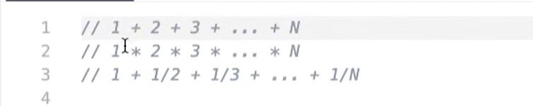
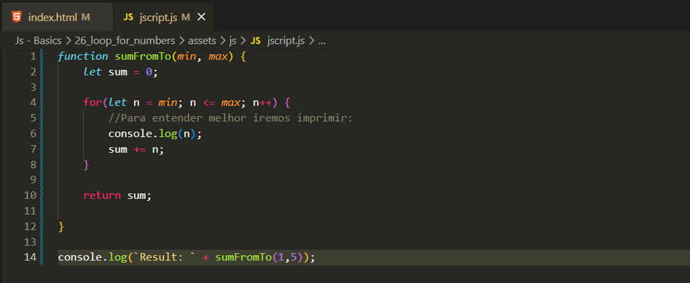
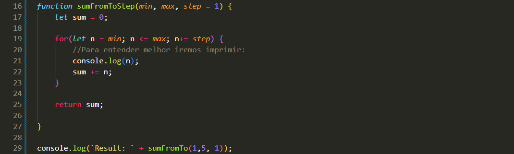
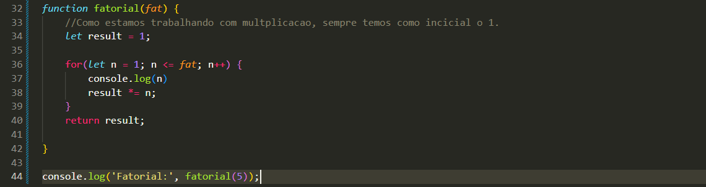

Numeros em Loop For
Intro
Agora iremos ver lacos em operacoes matematicas.
Agora iremos ver lacos em operacoes matematicas.
Exemplo usado que iremos precisar imprimir na tela:

Iremos comecar criando uma funcao para percorrer do valor minimo ao maximo e somar o valor em um resultado final:

Também podemos usar um step em nosso laço. Nesse caso, o step define de quanto em quanto o valor será incrementado na soma. Exemplo:

Para calcular um fatorial, podemos fazer da seguinte forma:
